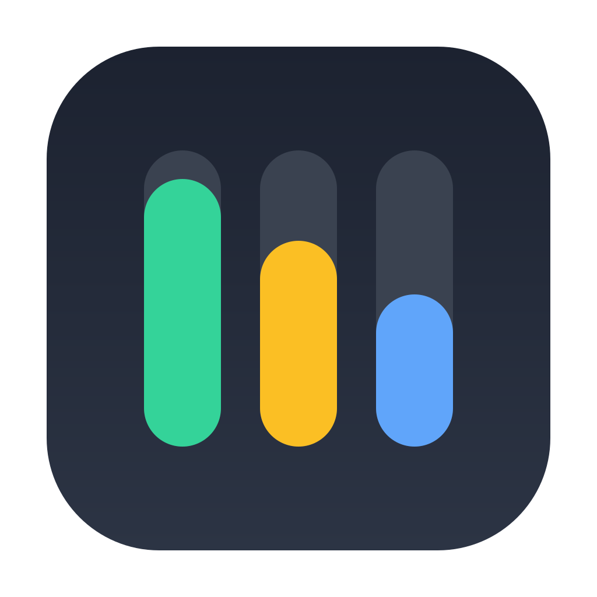

A tiny native macOS widget that shows what you have left — 5-hour & weekly quotas for both Claude and Codex, plus today's cost and an end-of-day projection.
↑ Switch the preview language — the app has the same toggle built in (English by default).
Your Claude 5-hour and weekly limits straight from Anthropic's server — account-wide, so it already counts Desktop, Code and web.
Your Codex weekly quota (OpenAI moved Codex to a single weekly window in 2026), read from your local Codex session logs.
Today's combined cost (via ccusage) with an end-of-day projection at your current rate.
Renews its own OAuth token from the keychain — no need to keep a terminal open. Read-only, never touches your prompts.
An optional system notification the moment any quota window resets and your allowance is full again.
Switch the whole interface language from the menu in one click. English by default.
One command. It builds, installs and starts at login — nothing else to set up.
# macOS 12+, needs Xcode Command Line Tools (xcode-select --install)
curl -fsSL https://raw.githubusercontent.com/Hugo291/agent-usage-menubar/main/install.sh | bash
~/Applications.Optional: install ccusage to unlock the daily $ cost and token figures — the quota percentages work without it. Uninstall any time with ./install.sh uninstall.